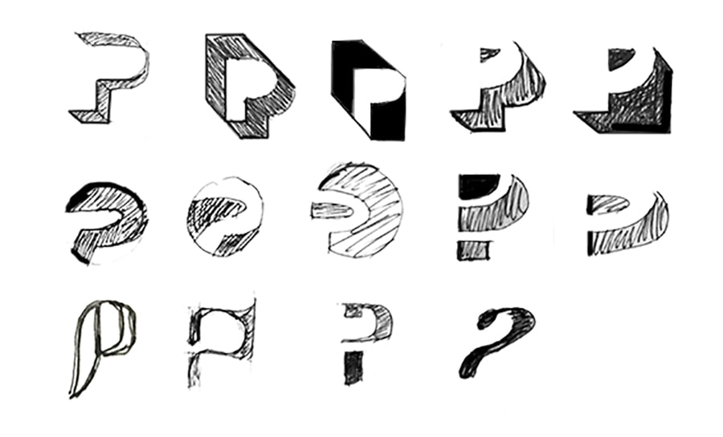
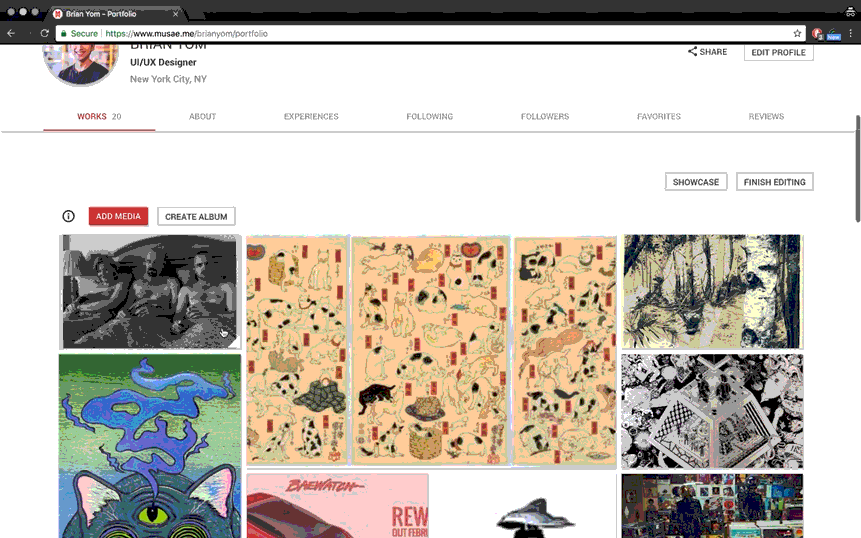

As one of the founding members I was required to wear as many hats as possible. I coordinated and led all facets of design including: defining user journeys, branding, product & visual design, prototyping, user research, and even the pitch deck for investors.
The Patron organization was truly amazing despite collaborating remotely across the globe. We were artists, engineers, musicians, designers, writers, hackers, and makers who came together with one mission. We applied Agile methodology and tasks were tracked and assigned using Asana task management tool.
In my first UI/UX role, I self-taught many skills, leveraging my industrial design background. As a founding member, I enjoyed the freedom to experiment without strict guidelines. Coordinating with a globally distributed team was challenging due to time differences. The toughest part was designing for two distinct user types: "Creatives" wanting to showcase talents and "Patrons" seeking to book services. With no initial user base, we relied on competitive analysis for insights and conducted multiple rounds of usability testing to balance their needs.
1. Formulate a design language system and choose the right tools.
2. Design an experience for creatives to curate a portfolio, show off their creative services, and partner with patrons.
3. Design an experience for patrons to discover and book creative services.
4. Growth hacking with 0 budget using social media and scraping tools.
5. User testing our platform for insight.
6. Rinse & repeat.
7. Create a pitch deck to obtain dough to pay for caffeine + beer.
Reviewing existing UXPin prototypes, I found the experience fragmented and unpolished, making development difficult without a unique design language for Patron. We first defined our design system, adopting Angular Material for its simple, proven components and style library. I audited and normalized reusable components, responsive layouts, and breakpoints to establish a baseline pattern library.
We then tested and iterated on specific components and layouts for optimal usability. Since the designs were in UXPin and Adobe Illustrator, I suggested moving to Sketch. Setting up Symbols and a Style library in Sketch saved countless hours compared to rebuilding in Illustrator. With the right tools in place, we advanced the product development efficiently.
Our previous logo was an afterthought overshadowed by site development. SO I emphasized the need for a unique logo to establish our brand image. I experimented with various ideas and iterations. we narrowed the options to those circled in red.
After further refining, I round up what we liked and leaned towards the designs that were isometric and utilized negative space to form the letter 'P'.
and the final product with animation
Creative content is a personal experience for everyone, from the artists creating it all the way to the Patrons admiring it. We wanted to capture the essence of the arts by designing a blank canvas aesthetic that is dynamic to the unique creative content. This way, we are able to incorporate other forms, colors, and patterns to work in tandem with the creative content.
Our development process was agile, working in 2-3 sprints.
Although the product features and experience was laid and planned out in the strategic business document as mentioned above, we needed a sitemap to be able to visually communicate and connect the dots between our entire web app and map out our user experience. I created a sitemap and updated it periodically as features were added and modified.
After plotting the sitemap, I created a diagram to map the customer/user journey to determine areas of opportunity across different themes. Figuring out the opportunities reinforced the feature requirements in our sitewide copy document.
The diagram above showed the journey on a macro level. So I created a diagram depicting a Patron's journey to find a portrait photographer on a micro level. This helped us to determine the hierarchy of information and assets required for the Patron to experience a smooth process from searching to booking.
We did not have a direct competitor, but there were other platforms that offer similar features for discovery, booking, and profile/account management, such as Airbnb, Taskrabbit, Patreon, Fiverr, and Upwork.
After identifying our competitors and market, I conducted a competitive analysis of 13 products based on similar end goals that we were designing for. As such, I found it important to break out the analysis by major features that overlap.
1. Hero image or video.
2. Short and catching intro describing our product.
3. How it works button on the navigation bar.
4. How it works section with illustrations.
5. No pricing info on homepage.
6. Listing out all categories on homepage.
7. Search bar on navigation or hero image/video.
8. Secondary User button on navigation bar with unique page.
9. Illustrations supporting overall aesthetic of product (if time allows).
We analyzed how each platform introduced features to their audience and balanced the needs of both user types on the homepage. Typically, the main site focuses on Patrons, allowing them to discover and consume content or products, while Content Creators learn about the platform through a separate user path. By adopting this strategy, we aimed to ensure that Patrons easily enjoy services from Creatives, while Creatives find inspiration from their peers. Below is the final result of our homepage.
I designed the signup modal with mobile first in mind to provide a frictionless process. A simple step by step process with a visual confirmation page.
After reviewing the current profile page design, I recognized the need to incorporate our design language for better legibility. While the centered profile image offered balance, it created spacing issues on mobile. I moved the image to the left, allowing more space for the user name and location.
For mobile, I center-aligned the elements, ensuring that long names and city names would not interfere with the 'Share' and 'Edit Profile' buttons. The horizontally scrollable tab menu was retained for ease of navigation.

The menu items I nested into horizontally scrollable tab menu. It was easy to implement this to our prototype since the module already existed in Angular. Simple plug and play = save time.
We had two key requirements we wanted to incorporate to differentiate ourselves compared to other platforms. One was to allow users to upload videos as their cover media. A simple youtube link inserted into the profile settings, will allow users to make their page truly unique.
Secondly, a customizable portfolio. Where users can drag, resize, and customize to their delight. No other portfolio platform offers this amount of customizability. We were super excited to deliver and offer this feature for both Creatives and Patrons. This was a web only feature.
where creatives easily manage their profile, portfolio, and bookings. I designed a left column that houses all the dashboard menu items. We have created cards for Booking items, adding experiences, and reviews.
During the design phase, I recognized the need for easily modifiable modules for developers. I integrated our existing tab menu bar from the Creative Profile page, displaying the service name, location, and page shortcuts. The booking feature was placed in a container on the right side.
laid out 3 macro scenarios that drove patrons to book a creative service. visualized in the patron's user flow below.
major features we wanted to test were the homepage, signup process, creative profile, and booking process. After looking back at our user stories we populated questions on Google Forms. We reached out to a couple users via our messaging platform based on their activity on our platform. Then tested via Google Hangouts using screen share. The test included open ended questions and 1-10 scale questions.
After testing with 25 individuals, there were 7 most requested features and to our surprise no issues with the interface and experience. We assumed our careful planning worked out.
We implemented all the requests and they are on the live site today.
After several months of hard work, we began by reaching out to friends and family, then extended our efforts to all our LinkedIn connections, acquiring around 1000 users.
second round, I used ScrapeBox to create an email list. This tool that searched specific keywords on Google, Facebook, and Twitter, returning URLs with the keywords. I then used ScrapeBox to harvest email addresses from those pages, collecting up to 20,000 emails in 24 hours. Using Excel to compile/sort the emails then bulk sent emails using the Streak Plugin for Gmail. the result was a 2% conversion rate so we decided to pivot to another strategy.
third round, we focused on contacting creatives on Instagram, Twitch, and Ello. I managed these contacts, tracking all exchanges using the Streak pipeline tool. This more personal approach proved more successful but extremely time-consuming.
After several months of hard work, we began by reaching out to friends and family, then extended our efforts to all our LinkedIn connections, acquiring around 1000 users.
second round, I used ScrapeBox to create an email list. This tool that searched specific keywords on Google, Facebook, and Twitter, returning URLs with the keywords. I then used ScrapeBox to harvest email addresses from those pages, collecting up to 20,000 emails in 24 hours. Using Excel to compile/sort the emails then bulk sent emails using the Streak Plugin for Gmail. the result was a 2% conversion rate so we decided to pivot to another strategy.
third round, we focused on contacting creatives on Instagram, Twitch, and Ello. I managed these contacts, tracking all exchanges using the Streak pipeline tool. This more personal approach proved more successful but extremely time-consuming.
During the design process, it helped our team to reflect back on our primary goals and target audience. To reinforce the WHYs of brining Patron to life. I worked hand in hand with the CEO.
Reflecting on my time at Patron, I saw my design abilities advance rapidly. It was rewarding to develop skills in graphic, web, and video editing. Collaboration was key, working with developers to break down designs and explaining the importance of a 60-character count for legibility to the CEO. It was an all-hands-on-deck environment. I'm proud of facilitating the team to define a design language and product beyond just UX Pin screenshots.
A notable skill I acquired was self-learning. Figuring things out by reading design blogs on Medium and using Stack Overflow is crucial. Trusting instincts based on qualitative research was another. Risk-taking is valuable, but it's essential to explore risky ideas thoroughly to ensure they are the right solutions.
I learned the complexities of designing a product/feature from scratch and the integral role of a UI/UX designer within a team.
Thanks for reading! If you want to collaborate, discuss web design and development, grab coffee, or just say hello, shoot me an email or connect via LinkedIn!